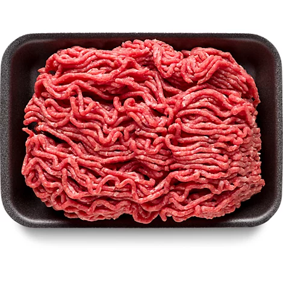
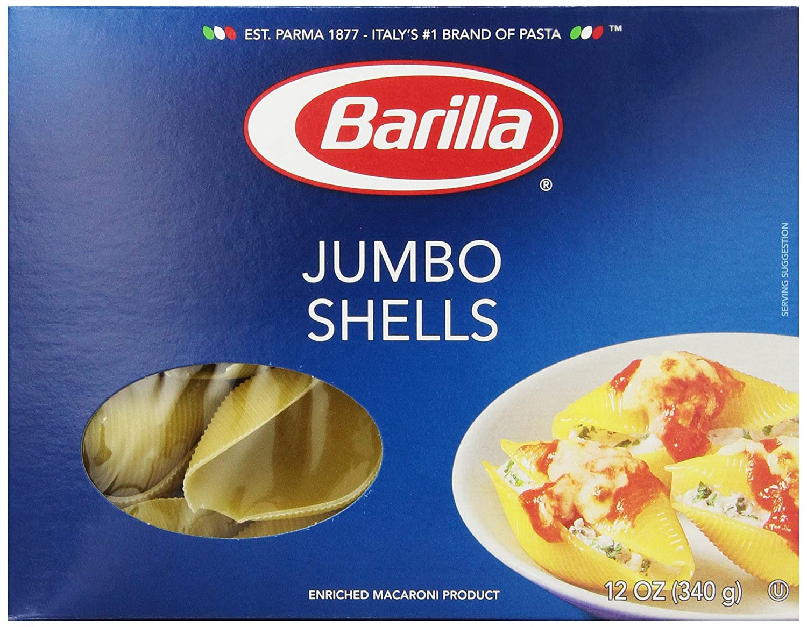
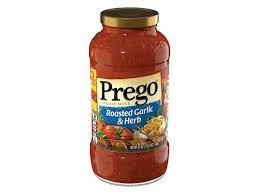
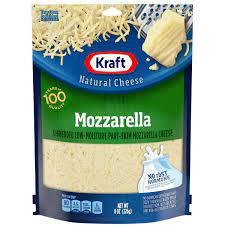
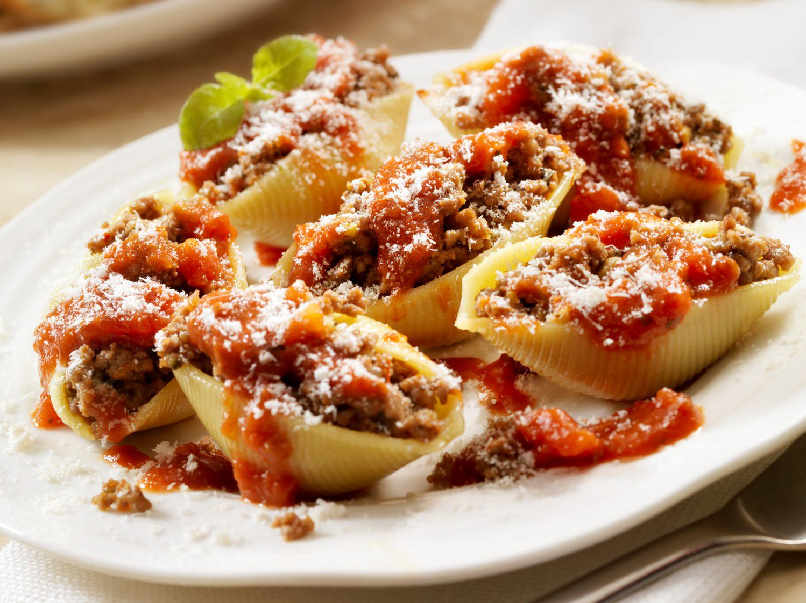

| Ingredient Name | Amount | Picture of Ingredient |
|---|---|---|
| Ground Beef | 1lbs |  |
| Jumbo Shells | 1 Box |  |
| Marinara Sauce | 32oz |  |
| Shredded Mozzerella | 16oz |  |
| Instructions: Preheat the oven to 375 degrees Brown 1lbs of ground beef in a skillet Boil the box of jumbo shells until the are soft Stuff each shell with a table spoon of cooked ground beef and a pinch of shredded mozzerella cheese Place the stuffed shells into a glass cooking dish After all of the stuffed shells are in the pan cover them with the marinara sause and the remainder of the shredded cheese Bake for 20-30 minutes  |
||